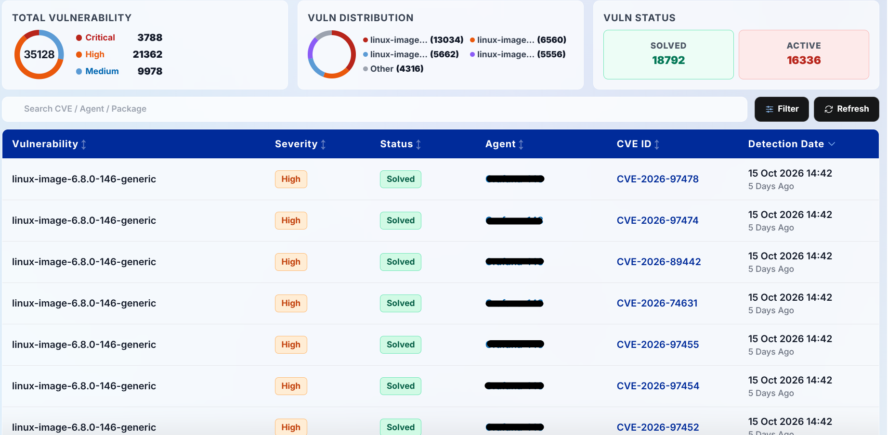
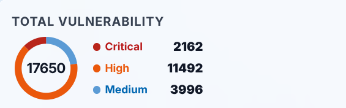
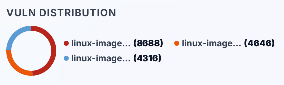
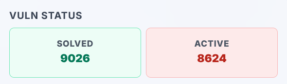
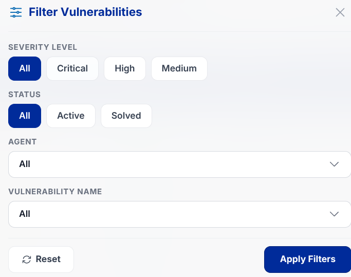
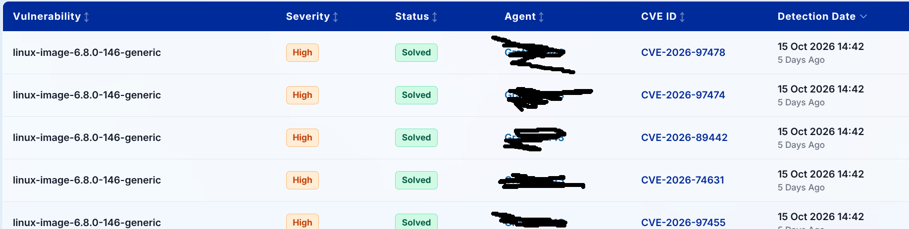
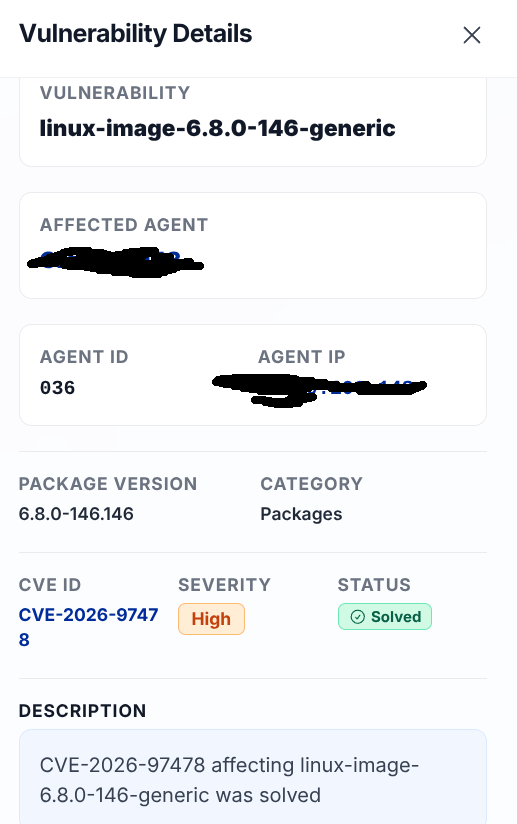

Dashboard Modules
Vulnerabilities
The Vulnerabilities module catalogs software vulnerabilities detected across monitored systems. This exposure index assists security engineers in evaluating software flaw severity and expediting necessary patch remediation.

Figure: Vulnerabilities Inventory Module Interface
7.1. Vulnerability Metrics

Figure: Total Vulnerability Severity Breakdown

Figure: CVE Flaw Distribution Chart

Figure: Active vs Solved Status Cards
- Total Vulnerability: Visualizes the severity breakdown alongside absolute finding totals (Critical in red, High in orange, Medium in blue).
- Vuln Distribution: Donut visualization mapping the dominant CVE identifiers and categories discovered throughout the infrastructure.
- Vuln Status: Two side-by-side remediation metric cards:
- Solved (Green card): Total vulnerabilities successfully patched, rescanned, and verified secure.
- Active (Red card): Open software vulnerabilities currently unpatched and awaiting remediation.
7.2. Search & Advanced Filter Controls

Figure: Granular search criteria modal for CVE findings
- Quick Search: Instant text matching (Search CVE / Agent / Package) to isolate specific CVE codes, package names, or hostnames.
- Advanced Filter Modal: Filters records by Severity (Critical, High, Medium), Status (Active, Solved), Agent, Vulnerability Name, and Category.
7.3. Vulnerability Inventory Table

Figure: Detailed vulnerability findings catalog table
- Vulnerability: Official descriptive title of the software flaw.
- Severity: Urgency classification tier (Critical, High, Medium).
- Status: Current remediation state (Active or Solved).
- Agent: Monitored host endpoint affected by the package flaw.
- CVE ID: International standardized vulnerability identifier (e.g.,
CVE-2024-3094,CVE-2023-4863). - Detection Date: Date and timestamp when the vulnerability was initially identified.
7.4. Vulnerability Detail Drawer
Clicking on any vulnerability entry opens a technical side-drawer displaying:

Figure: Slide-out drawer with detailed CVE technical documentation
- Vulnerability: Complete CVE title and advisory headline.
- Affected Agent: Affected host machine name.
- Agent ID & Agent IP: Two-column grid detailing Wazuh agent registration ID and host IP.
- Package Version & Category: Installed software build version when detected (e.g.,
5.15.0-194.204) alongside category classification (e.g.,Package Vulnerability). - CVE ID, Severity & Status: Three-column summary grid with standard CVE badge, urgency level, and resolution status.
- Description: Full technical narrative explaining flaw mechanics, impact potential, and vendor remediation paths, equipped with a Read Full Description / Show Less toggle.
- Detection Date: Timestamp of initial detection.